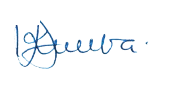

Shukurani
Taasisi ya Elimu Tanzania (TET) inatambua na kuthamini mchango muhimu wa washiriki kutoka taasisi mbalimbali za umma na binafsi zilizoshiriki kufanikisha uandishi wa kitabu hiki cha mwanafunzi. Kipekee TET inatoa shukurani kwa Chuo Kikuu cha Dar es Salaam (UDSM), Chuo Kikuu cha Sokoine (SUA), Chuo Kikuu cha Dodoma (UDOM), Chuo Kikuu Ardhi (ARU), Chuo Kikuu Kishiriki cha Elimu Dar es Salaam (DUCE), Chuo Kikuu Kishiriki Marian Bagamoyo (MARUCo), Idara ya Uthibiti Ubora wa Shule (SQA), Vyuo vya Ualimu, na Shule za Msingi. Pia, TET inatoa shukurani za dhati kwa mchango uliotolewa na wataalamu wafuatao:
Vilevile, TET inatoa shukurani kwa walimu wote wa shule za msingi na wanafunzi walioshiriki katika ujaribishaji wa kitabu hiki. Mwisho, TET inaishukuru Serikali ya Jamhuri ya Muungano wa Tanzania kwa kutoa fedha zilizofanikisha kazi ya uandishi na uchapishaji wa kitabu hiki.
